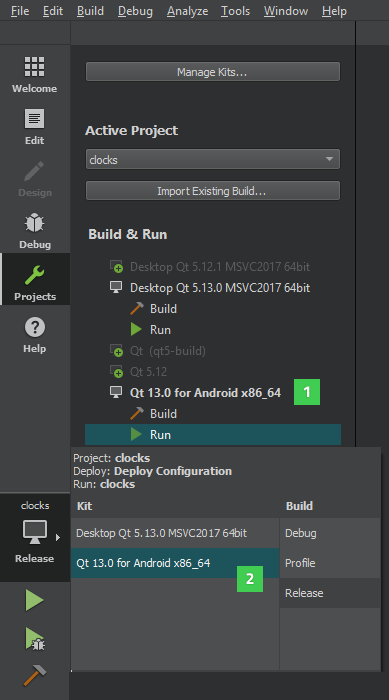

Previewing on Devices
To preview UIs on Boot2Qt devices, you need to connect the devices to your system with a USB cable, or a wired or wireless connection, depending on the device, and configure connections to them. The necessary kits have been predefined and you only need to enable them for your current project.
Deploy configurations handle the packaging and copying of the necessary files to a location in a device where you want to run the executable at.
To preview a UI on a device:
- In Projects > Build & Run, enable the kit predefined for the device type (1).
- Select the kit for the device in the kit selector (2).

- Select Build > QML Preview or press Alt+P.
Previewing on Boot2Qt Devices
You can preview UIs on Boot2Qt devices that are supported by Qt for Device Creation. For a list of supported devices, see Reference Target Devices and Development Hosts.
You must configure the device as instructed in the Installation Guides.
Note: At the time of this writing, macOS is not supported as a development host for Qt for Device Creation. This means that you cannot preview UIs on devices if you are using Qt Creator on macOS. For more information about supported development hosts, see Supported Development Hosts.